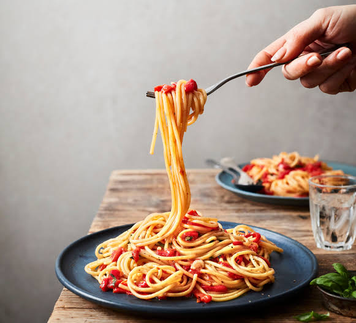

Recipe for Spaghetti

Home
Description
Ingredients
- Pasta
- Meat
- Sauce
- Onion
- Garlic
- Oil and seasoning
- Garlic
Steps
- Cook the spaghetti noodles in a large pot of salted boiling water until they are al dente, then drain them.
- Sauté the diced onion and garlic in olive oil, then add the ground beef and cook until it is fully browned.
- Season the meat, pour in the jar of marinara sauce, and let it simmer on low heat for 15 minutes.
- Toss the drained pasta directly into the sauce or layer the sauce over individual plates of noodles and garnish with Parmesan.